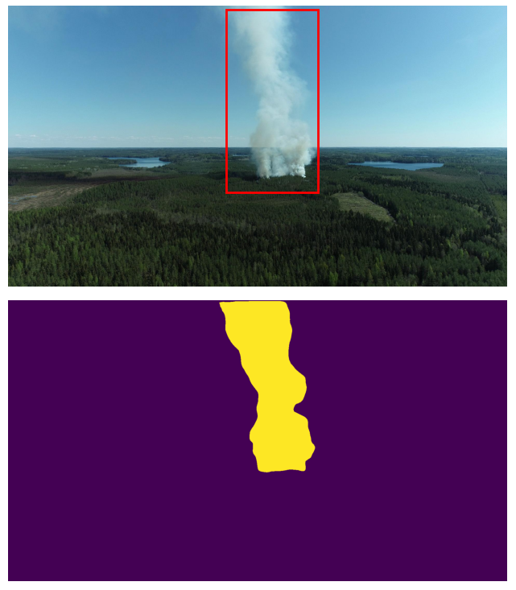

|
Julius Pesonen I'm a research scientist at Finnish Geospatial Research Institute. |

|
ResearchI'm interested in computer vision, deep learning, and image processing. |
|

|
Detecting Wildfires on UAVs with Real-time Segmentation Trained by Larger Teacher Models
Julius Pesonen, Teemu Hakala, Väinö Karjalainen, Niko Koivumäki, Lauri Markelin, Anna-Maria Raita-Hakola, Juha Suomalainen, Ilkka Pölönen, Eija Honkavaara arXiv, 2024 code / arXiv UAV-onboard wildfire detection using small segmentation models distilled from larger ones with bounding box guidance. |
|
Feel free to steal this website's source code. Do not scrape the HTML from this page itself, as it includes analytics tags that you do not want on your own website — use the github code instead. Also, consider using Leonid Keselman's Jekyll fork of this page. |